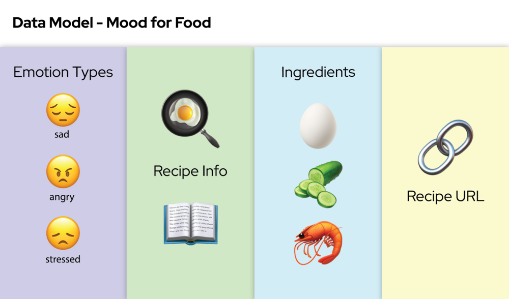
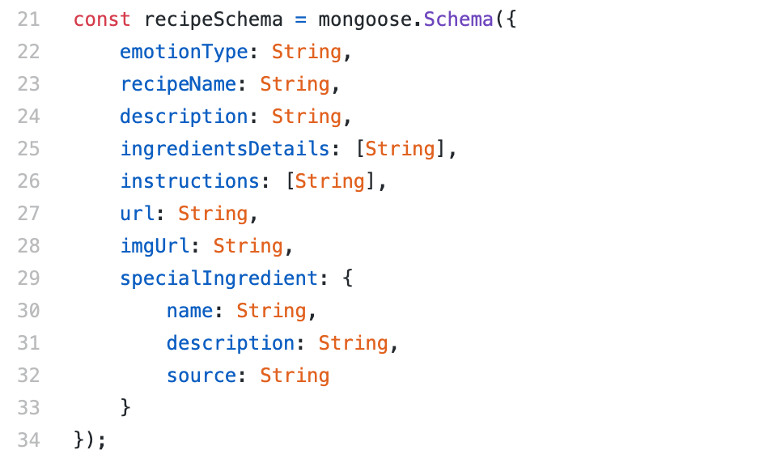
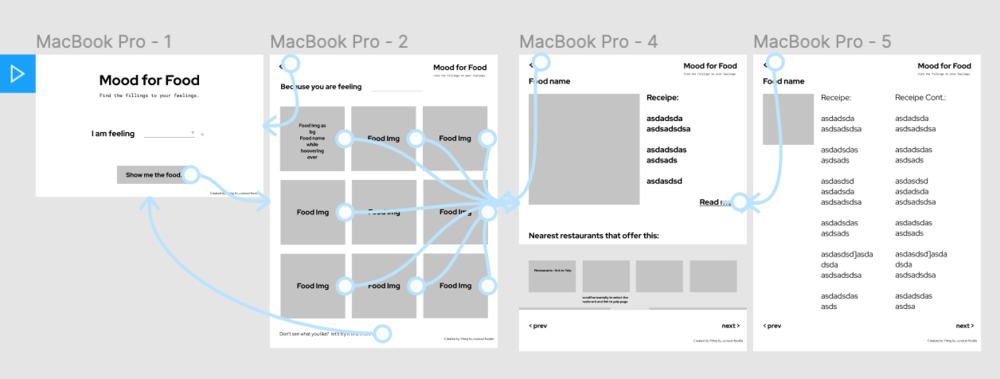
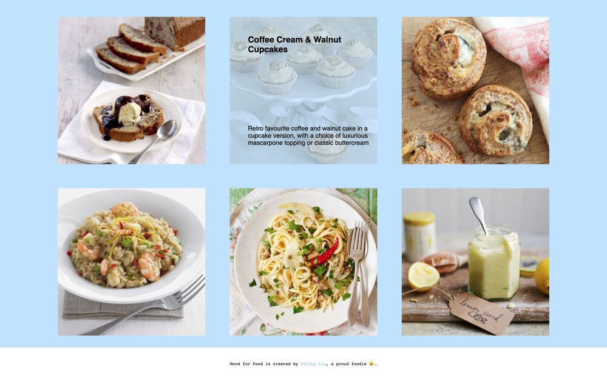
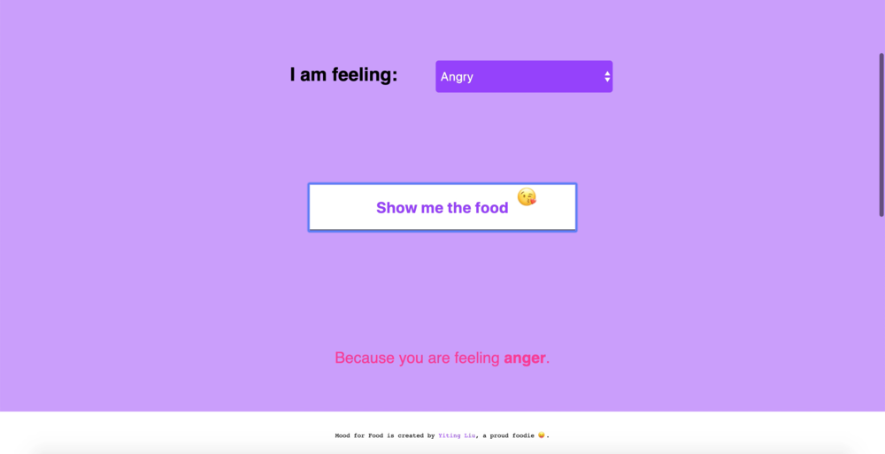
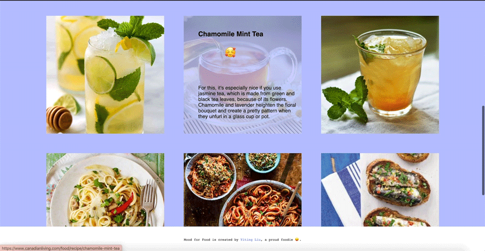

Mood for Food - Fullstack Web
A website offers food options based on user emotions.
Highlights
I created a full stack web application within 3 weeks providing users recipes based on their emotion inputs from ideation to execution. I conducted research, designed user webflow, graphics, and data structure for this project. I worked on both client and server side with HTML, CSS, Javascript, Node.js, MongoDB, Git, and Heroku.
Time: Feb. 2020
Problem Statement
How might we help people who can not decide what to eat to find the right food based on their feelings?
Background
I am a foodie and everytime I think about what I want to eat next meal after meal. I enjoy the process of exploring amazing food to make or to eat out. However, it could be exhausting at times. Also, my mood affects what I want to eat. I want to combine my mood with food searching tools to create a whimsical and playful search engine for food to make or food to get.
This project is a passion project that will benefit people who spend lots of time to figure out what to eat for their meals. Especially when they are feeling down, certain food can help lighten the mood.
Role
Developer & Designer
Research
I did research to figure out what food is for certain emotions. I searched for six universal human emotions: happy, sad, anger, surprise, fear, disgust from here. I decided to start with three emotions: sad, stressed, and anger since most of the information I found are to make people happy in terms of food selections.
I searched related food for certain moods through online articles. I then build a data model in a spreadsheet. I iterated the data model three times to achieve a more efficient way for my clients.
Building Database
I built my data model in excel first. There are ingredients for emotions respectively:
I then searched for recipes with that certain individual ingredient online. Most of the sources are from BBC Good Food for its comprehensive data.
After several iterations, my data model looks as below:
Emotion Types ==> Recipe Info ==> Ingredients ==> Recipe URL I build the Schema for my database using Mongoose.
Ideation/Exploration
Web flow
Development
Front-End is so much fun!
Front-End - Flexbox
I was having trouble with flexbox to create what I wanted. Turns out I would have to make sure the whole page with the display:flex and tweak around the row and column and other details. This website is a complete guide to flexbox.
Front-End - Cursor Customization
I wanted to customize the cursor in JS since I would ideally want the different emojis to replace the default cursor every 10 seconds when the user is browsing on the page. However, I tried in JS to use the code below. It still didn't work.
So I just customize the cursor in CSS. I would love to learn to customize the cursor in JS in the future.
Front-End - Interaction Flow
I created the function of fun part in my client.js to have the following features:
- Change background color based on mouse position
- Reset background color when mouse is off the website
- Add emojis based on key press
- Clean emojis when pressing the spacebar
There are so many detailed aspects in terms of front-end. I wanted to create the experience as user-friendly as possible, therefore, I tried testing navigating the browser and had my friends using it several times to improve it.
Insights:
- Love the changing of background and emoji features
- The recipe text of the image is not completely aligned
- Would love to see more features such as delivery services, restaurants, reviews.
Changing background with mouse position & Hovering on image effect.
Generating emojis by pressing keys.
Refinement and Testing
Ordering matters for Back-End
I didn't use MongoDB at first since I was building my own JSON file. It turns out connecting to MongoDB using Mongoose would make the whole process easier.
I did conquer the part of showing the content with my previous data structure before using any MongoDB, which took a long time.
Data model iterated three times
I originally followed the model straight from excel, however, what I really wanted was to have the mood determine the ingredients and show the recipes that include the ingredients. Ideally, I want to choose one recipe for one ingredient in the ingredient list for one emotion. It got too complicated at the time and it was not as crucial.
So the final data model looks like this:
Emotion Types ==> Recipe Information ==> Further Details of Special Ingredients ==> Link to UrlSolution
I build this website using pastel color palette and emojis to bring you happiness even when you are feeling done!
Moving forward
- Develop the visuals for the click after the recipe image
- Enhance the website with more features such as restaurants, delivery, and reviews.
- Cursor Customization in JS
- Smoother User Interactions
Special thanks to Cassie Tarakajian, Tirta Wening Rachman for help along the way.
Made within 3 weeks in Feb. 2020.